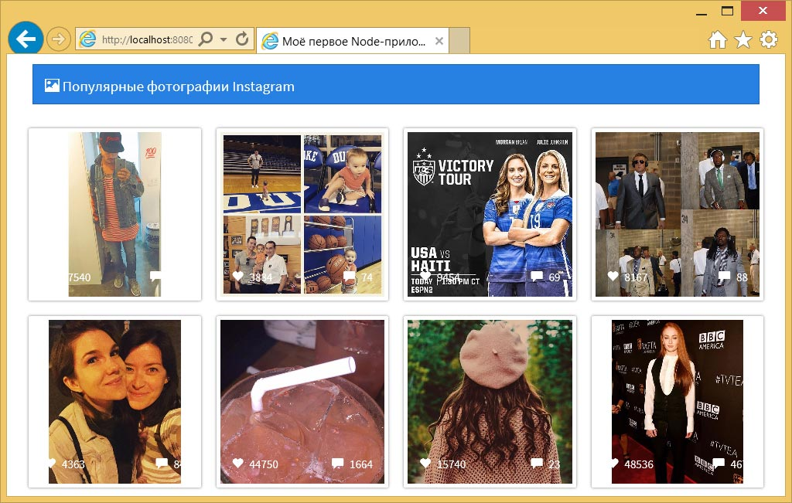

Получение данных в HTML
Express позволяет передавать данные в наше представление через маршруты, передавая объект данных.
Пример данных в EJS
Например, мы можем передать простое сообщение в наше представление, используя:
app.get('/', function(req, res) {
res.render('pages/index', { message: 'Это данные!' });
});Применяя EJS в нашем представлении мы могли бы отобразить переменную message, используя:
<%= message %>Использование данных Instagram
Воспользуемся этими принципами для вызова instagram-node, чтобы получить популярные картинки. В нашем файле server.js мы вернём изображения в главную страницу. Для этого сделаем вызов в нашем маршруте app.get ('/'.
Получение данных Instagram из Node
В server.js, где мы определили маршрут нашей главной страницы, мы заменим маршрут целиком следующим:
// главная страница — популярные изображения
app.get('/', function(req, res) {
// используем пакет instagram для получения популярных картинок
ig.media_popular(function(err, medias, remaining, limit) {
// отображаем главную страницу и передаём в неё изображения
res.render('pages/index', { grams: medias });
});
});Когда мы используем вызов ig.media_popular(), то получаем доступ к объекту medias. Он содержит все данные, которые мы видели в анализе API.
Используя res.render() мы можем передать все данные medias в наше представление как объект с именем grams. Давайте прямо сейчас воспользуемся этим объектом.
Отображение данных Instagram в представлении
Внутри файла index.ejs будем в цикле обходить объект grams и отображать:
- фотографию из Instagram;
- число лайков;
- количество комментариев.
Используя EJS мы можем обходить объект в цикле через grams.forEach(). Замените раздел <main> нашего сайта следующим:
...
<main>
<div class="row">
<% grams.forEach(function(gram) { %>
<div class="instagram-pic col-sm-3">
<a href="<%= gram.link %>" target="_blank">
<img src="<%= gram.images.standard_resolution.url %>" class="img-responsive">
</a>
<div class="instagram-bar">
<div class="likes">
<span class="glyphicon glyphicon-heart"></span>
<%= gram.likes.count %>
</div>
<div class="comments">
<span class="glyphicon glyphicon-comment"></span>
<%= gram.comments.count %>
</div>
</div>
</div>
<% }); %>
</div>
</main>
...Мы создали ссылку на изображение в Instagram. У нас также есть instagram-bar для отображения числа лайков и комментариев.
При обходе объекта grams мы получаем доступ ко всему, что было возвращено API. Вы можете воспользоваться анализом API для просмотра данных и вызова необходимых элементов.
Для изображения мы используем images.standard_resolution.url, а для лайков и комментариев, соответственно, likes.count и comments.count.
Если бы нам требовалась информация о пользователе, мы могли бы использовать user.username и user.profile_picture. Заголовок может быть получен с помощью caption.text.
Последним шагом является стилизация наших изображений. Добавьте следующее в файл style.css:
.instagram-pic {
position:relative;
padding:10px;
overflow:hidden;
}
.instagram-pic img {
padding:5px;
border-radius:2px;
box-shadow:0 0 5px rgba(0, 0, 0, 0.5);
}
.instagram-bar {
position:absolute;
bottom:30px;
width:100%;
left:0;
padding-left:30px;
padding-right:30px;
color:#FFF;
}
.instagram-bar span {
margin-right:5px;
}
.instagram-bar .likes {
float:left;
}
.instagram-bar .comments {
float:right;
}Теперь у нас есть приложение с популярными изображениями из Instagram!

Резюме
Подведём итоги. Мы немного узнали как работает Node и чем он так хорош. Мы также смогли:
- обработать JS-файл через Node;
- установить пакеты с помощью npm;
- создать HTTP-сервер с Node и Express;
- воспользовались пакетом для получения данных API;
- сделали шаблон приложения с помощью EJS;
- отобразили данные через EJS.
Эти подходы можно применять ко многим различным типам приложений. Поиграйте с пакетами доступными в npm. Возможности, которые можно получить с Node, бесконечны.
Вы можете соединить всё с фронтенд-фреймворком вроде Angular и базой данных вроде MongoDB для создания полноценного приложения.

Все материалы сайта доступны по лицензии Creative Commons «Attribution-NonCommercial» («Атрибуция — Некоммерческое использование») 4.0 Всемирная, если не указано иное.